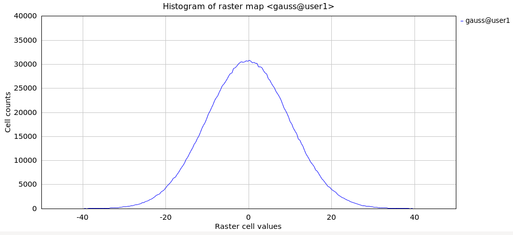

DESCRIPTION
r.surf.gauss produces a raster map layer of Gaussian deviates whose
mean and standard deviation can be expressed by the user. It uses a Gaussian
random number generator. It is essentialy the same as r.surf.random,
but uses a Gaussian random number generator instead.

Histogram of map generated with r.surf.gauss (mean=0, sigma=10)
SEE ALSO
r.surf.contour,
r.surf.fractal,
r.surf.idw,
r.surf.idw2,
r.surf.random,
v.surf.rst
AUTHOR
Jo Wood
ASSIST's home
Last changed: $Date$